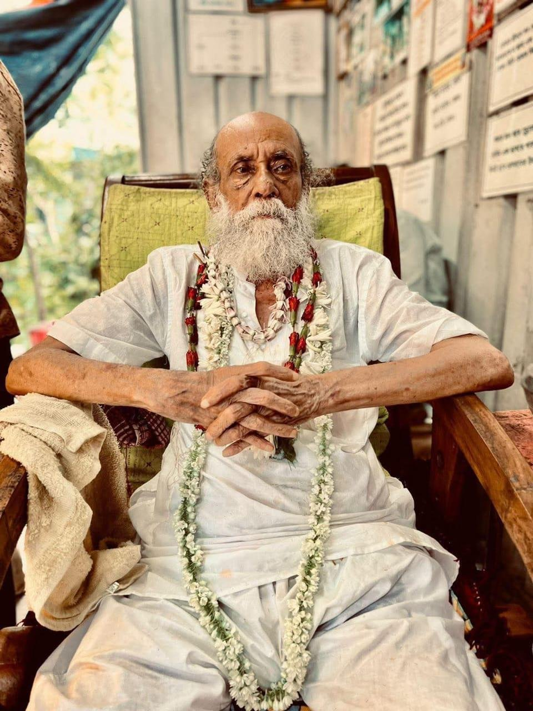

Introduction: Why Now?
Today, after a great deal of contemplation, I have decided to speak about my Guru. I have kept his name gupta (hidden) for a very long time. I initially thought I should choose a very large platform for the first time I spoke his name. I have been invited to over 12 podcasts, ranging from those with 50,000 followers to those with over one crore followers, many known specifically for spiritual content.
I thought that if there was one reason to go on a podcast, it would be to reveal my Guru's name for the first time. However, I received a clear message from Devi that there is no bigger channel for me to speak on than the one I currently occupy. Humbled and proud, I have decided to speak about my Guru, Shri Gupta Sadhak Shyama Khyapa, from the lineage of Shri Bama Khepa of Tarapith.
I hope I can do justice to a man of his stature. To shed light on a gupta sadhak (a hidden practitioner) is a powerful and potentially dangerous task. Without her kripa (divine blessing), it cannot be done. This is why I call her the "darkness of light." You cannot cast light onto a shadow that is specifically kept as a shadow unless the Divine Mother wills it. Today, with his permission, I seek to shed that light.

Guru Shri ShyamaKhyapa - Gupta Sadhaka and the Power behind Khyapa Parampara
What is a Gupta Sadhak?
In this world, there are people who love the limelight, seeking the stage at every chance to sing the glory of their deities. Aside from them, there are those specifically placed under a vow of secrecy. This is not a personal choice but an adesh (command) from their own Guru during various stages of tapasya (austerity). The rule is that you do not break that vow until the Guru decides it is time to be revealed.
Why do they stay hidden?
- A desire to avoid fame.
- A refusal to "sell" Devi or her vidya (knowledge).
- A rejection of how society treats and tries to "buy" spiritual gurus.
- An anti-societal vairagya (dispassion) of the highest state.
My Guru, ShyamaKhyapa, is the youngest disciple of Shri Bama Khepa. While senior disciples have posted on his behalf or created channels dedicated to him, he himself has always stayed in the shadows by the command of his Guru. However, he knew a time would come when I would be forced to reveal his name because of the "pashu" (animalistic) mentality of people who demand to know one's lineage before they deem someone eligible to speak about Devi. His Guru had already prophesied that such a person would come,someone he should allow to speak about his journey.
The Khyapa Tradition and Divine Insanity
My Guru belongs to the Khyapa tradition, which is characterized by "divine insanity." It is an absolute rejection of societal norms. There were previous attempts to interview him, but he would become so wild and intense that the interviews could never be aired. He carries immense shakti. As I speak this, he has been hidden away even further from society's eyes; he used to reside at the Rajpur Mahashamshana, but now Devi has taken him completely into her lap.
I take a vow today: as long as my name is spoken as a Kali Sadhaka, his name shall be known alongside it. The amount of prana (life force) and urja (energy) he has given me is beyond what people can simplify into "how long I sat with him."
The Journey of a Businessman Turned Monk
Decades ago, before he received the name ShyamaKhyapa, he was an exceptionally wealthy businessman. He ran a successful law and audit firm with 50 employees, cars, and bungalows. He was an intense devotee of Ma Kali, mentally reciting her name even while conducting business.
During a client visit to Nepal, he visited the Pashupatinath Temple. He managed to enter the Garbhagriha (sanctum sanctorum) early in the morning, hugged the Shivalinga, and heard an internal voice:
"You are wasting your time chasing frivolous things. Leave this now and get out."
He did not waste a moment. He handed his business to his partner and walked out. He was a married man with two children. Here, I must honor my Guru Amma (his wife). Imagine a woman whose husband suddenly leaves a life of luxury to become a simple monk. She moved from a bungalow to a small hut and never complained. Even when they could hardly afford rice water, she ensured the children were fed. Somehow, through Devi's grace, money would appear whenever it was truly needed.
The Austerities at Tarapith
He became a wandering monk, eventually settling in the Mahashamshana of Tarapith. He would meditate on burning funeral pyres for years. One day, he encountered a boy who ate only the mud from the cremation ground to cure his cancer. When the boy fainted, my Guru revived him using his own tapasya. The boy told him:
"You won't find a Guru here who can satisfy your thirst. You must perform the sadhana of Bama Khepa."
He then began intense meditation on the Ugratara mound,a mountain made of layers of ash from burnt bodies. One night, an old man (a hidden form of a master) told him to take a larger asan (meditation seat) than usual. During an intense storm with thunder and torrential rain, two dogs sought shelter on his large seat, resting their heads on his thighs. In that moment of intense power, a figure appeared, lifted him onto a half-burnt body, whispered a mantra into his ear, and vanished. That became his Guru Mantra.
The Meaning of Bama Khepa
Why is Bama Khepa called Mahakala Bhairava? After the churning of the ocean, when Shiva consumed the poison, the pain was so intense he wandered in agony. Ma Tara took him onto her lap and fed him her divine breast milk to soothe the pain. This moment,Devi's desire to see Mahadeva as her son,manifested as the avatar of Bama Khepa. He rose beyond the Shastras and Vedas because all knowledge comes from and returns to Kali.
Miracles and Hidden Power of Shri ShyamaKhyapa
My Guru has performed incredible feats:
- A thousand-day havan of the Mahamrityunjaya Mantra.
- Helping over a thousand women who were told they could not conceive to bear children.
- Stopping cyclonic storms in Bengal through his havan.
- Being seen at the Tarapith cremation grounds by advanced Aghoris while his physical body was hundreds of kilometers away at home.
He carries an intense rage, characteristic of Bama Khepa. He cannot be bought. If you offered him money, he would throw it in your face.
My Personal Connection: The Voice and the Puppy
At age 23, I had a deep connection with a Rottweiler puppy. One night, torn with the desire to have this dog but facing family opposition, I heard a voice in my room say in Hindi, "Soja" (Sleep). I didn't question it and fell asleep.
The next day, through a series of unlikely events, the puppy became mine, but I became homeless. I lived in a 600-square-foot house with nothing but a cot and my dog. Years later, when I finally met my Guru, I recognized his voice immediately. It was the same voice I had heard at 3:30 AM in my bedroom years prior.
When I first sat before him, he tested me. He asked:
"Your house might get destroyed, your career might get destroyed. Are you okay with that?"
I told him I had no gotra (lineage) and no identity; I was just a "burnt body" walking into his cremation ground. He smiled and said:
"I will give you my gotra. You are my spiritual son."
Conclusion: The Debt of the Disciple
I cannot give him anything as Guru Dakshina (offering) except for this: as long as I am known, his name"ShyamaKhyapa"will be known. He is the living prana of Bengal and Tarapith.
To those who ask how to succeed in Shamshan Kali Sadhana: you must lose your identity. You must rise from your own funeral pyre. There is no horoscope for a dead body. When you reach that state, the Guru fills you with prana.
ShyamaKhyapa is no longer gupta. His name will be known for the next 2,000 to 5,000 years. May the grace of Bama Khepa, through my Guru ShyamaKhyapa, bless all of you.
Jai Ma.